Maryam Mirzakhani: Iranian (1977–2017)
It has always been a puzzle to determine exactly why there is no Nobel Prize for mathematics. Speculations abound as to why Alfred Nobel chose not to designate mathematics as one of his prize categories, but nothing conclusive has emerged. This is not to say that mathematicians cannot win the Nobel Prize. A case in point is Herbert A. Hauptman. He was the first mathematician to win the Nobel Prize, albeit for chemistry, as he solved a 40-year-old chemistry problem using his mathematical talent (see chap. 48). There is, however, a prize solely for mathematicians under age 40. That is the Fields Medal, which is issued every four years to either two, three, or four mathematicians who have exhibited extraordinary genius. It is awarded by the International Mathematics Union. The first woman to win this prestigious award was the Iranian mathematician Maryam Mirzakhani, in 2014. Officially she won the award for her outstanding contributions to the dynamics and geometry of Riemann surfaces and their moduli spaces.
Sadly, life was cut short at age forty due to a severe case of cancer, while she was a professor of mathematics at Stanford University in California. Dr. Mirzakhani’s life began on May 12, 1977, in the Iranian city of Tehran. Perhaps her initial motivation for the subject came from her father, who was an electrical engineer. Her talents were recognized early as she attended a school for gifted youngsters, the Tehran Farzanegan School. In 1994 at age seventeen she won a gold medal at the International Mathematical Olympiad, becoming the first Iranian female student to win such an honor. This was followed by the next year’s International Mathematical Olympiad, where she achieved a perfect score, winning two medals and once again carrying the distinction of being the first Iranian student holding this honor.
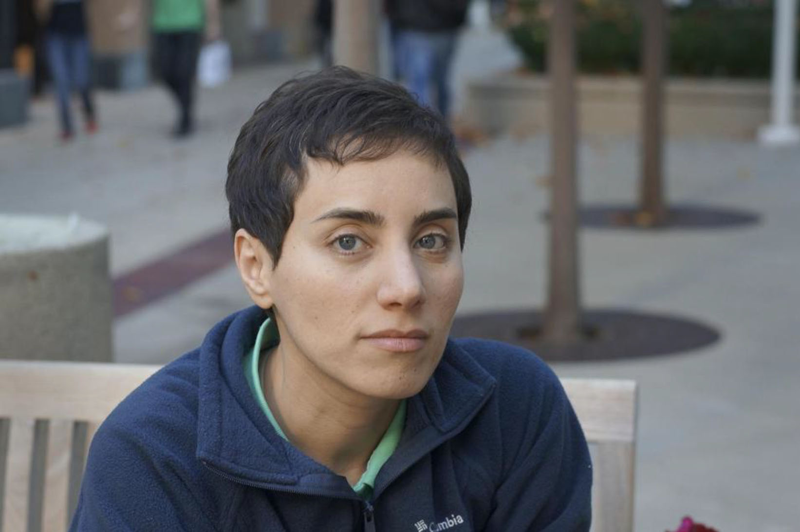
Figure 50.1. Maryam Mirzakhani.
From there she went on to Sharif University of Technology to earn her baccalaureate degree in 1999. She then attended Harvard University, earning her PhD in 2004. Once again, her superb talents enabled her to become a research fellow at the Clay Mathematics Institute, as well as holding a professorship at Princeton University. Her family and colleagues often mused about her style of problem-solving mathematics, which involved little diagrams or portals surrounded by mathematical formulas. In short, she had a very peculiar style of gently approaching problems in great depth.
In 2008, Mirzakhani married a Czech mathematician, Jan Vondrak, who was a professor at Stanford University, and then joined him on the faculty as a professor in 2009. As indicated earlier, she died prematurely in California on July 14, 2017, at the age of forty. However, she received a multitude of accolades from her home country, Iran, led by then-president Hassan Rouhani. In 2017, she was elected posthumously to the American Academy of Arts and Sciences.
What she left behind that will solidify her fame in the future are various contributions to the theory of moduli spaces of Riemannian surfaces. Even a very basic introduction to this branch of mathematics would go far beyond the scope of this book. That is why we will try, instead, to convey at least a very rough idea of the mathematical questions Mirzakhani studied and the methods she used by illustrating the most relevant notions with a few simple examples, without giving precise definitions and omitting technical details. A Riemannian surface can be imagined as a (two-dimensional) surface in space as those shown in figure 50.2: On the left we show a plane—that is, a “flat” surface with zero curvature; then we have a curved surface, where the curvature may vary across the surface; on the bottom we have a sphere, which is a closed surface with constant curvature (the curvature is the same at each point on the surface).
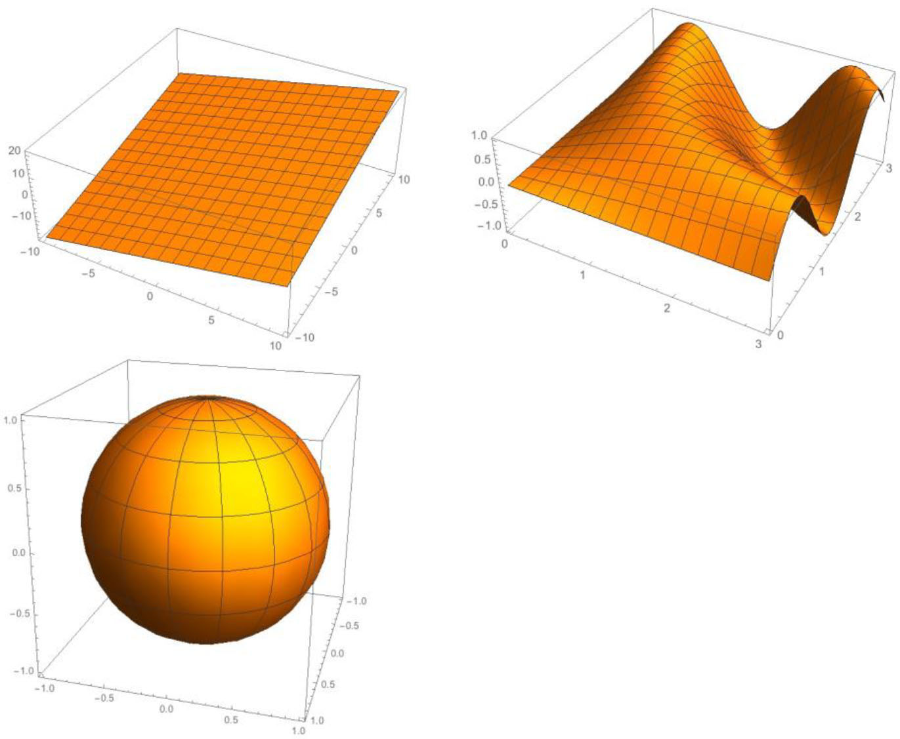
Figure 50.2.
However, not every surface is a Riemannian surface. A surface is called Riemannian if it possesses some additional properties, one of which is called orientability: A surface is called orientable if a two-dimensional figure that is drawn on the surface cannot be moved around the surface and back to where it started so that it looks like its own mirror image. Two examples of non-orientable surfaces are shown in figure 50.3: the Moebius strip (on the left) and the Klein bottle (below it). On the other hand, a torus (which is the mathematical notion for the shape of a donut) is orientable.
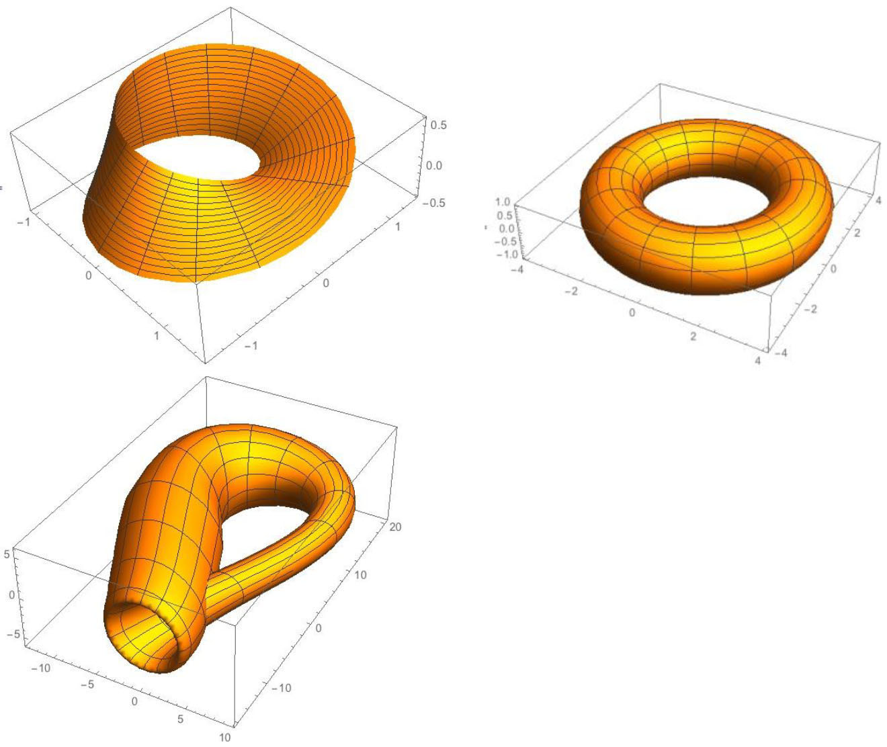
Figure 50.3.
The realm of Riemann surfaces can be divided into three classes: hyperbolic, parabolic, and elliptic Riemann surfaces. These notions correspond to negative curvature, zero curvature (flat), and positive curvature. A sphere is an example of a surface with constant positive curvature, a plane has constant curvature zero, and an example of a hyperbolic surface is a “saddle,” shown if figure 50.4.
Hyperbolic surfaces represent the biggest and most diverse group among Riemannian surfaces. Moreover, while elliptic and parabolic surfaces can be further divided into subcategories, no such classification is possible for hyperbolic surfaces. Maryam Mirzakhani’s early work was concerned with hyperbolic surfaces, more precisely with closed geodesics on hyperbolic surfaces. A geodesic is a generalization of the notion of a “straight line” to curved surfaces. The term “geodesic” stems from geodesy, the science of measuring the size and shape of the Earth. Originally, a geodesic meant the shortest route between two points on the Earth’s surface, but the abstract mathematical definition of a geodesic as a curve of shortest length also applies to any Riemannian surface, and even to higher-dimensional “surfaces” (also called hyper-surfaces). If we assume the surface of the Earth to be a perfect sphere, then the geodesics are exactly the great circles—that is, circles whose center is at the center of the sphere. Obviously, a sphere has infinitely many closed geodesics (a curve is closed if it has no endpoints). The shape of the Earth is indeed pretty close to that of a sphere, as you can verify by looking at the image shown in figure 50.5, taken by a NASA camera onboard the Deep Space Climate Observatory satellite, one million miles away from the Earth.
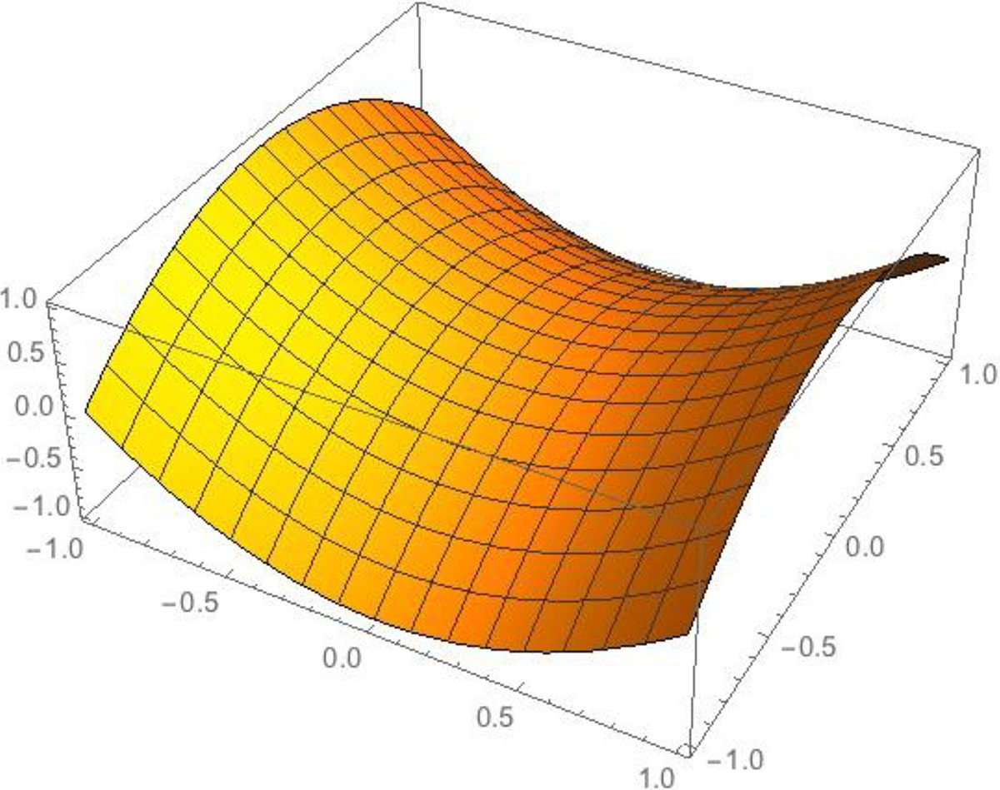
Figure 50.4.
Isaac Newton had already discovered that the effect of the rotation of the Earth results in a slight deviation from a spherical shape. The Earth is flattened at the poles and bulges at the equator, resembling a slightly oblate spheroid (an ellipsoid of revolution). An oblate (flattened) spheroid is obtained if an ellipse is rotated about its minor axis. However, the Earth’s deviation from a spherical shape is only about one-third of a percent; distances from points on the surface of the Earth to its center range from 6,353 km (3,948 miles) to 6,384 km (3,965 miles), with a mean radius of 6,371 km (3959 miles). For many practical purposes, such as navigation on the sea, the deviation from a perfect spherical shape can be safely ignored, at least in most circumstances. However, from a mathematical point of view, this “symmetry-breaking” changes the picture completely: for any given point on a sphere, we can find infinitely many closed geodesics running through this point—namely, all the great circles that can be drawn through this point. Yet, the only simple closed geodesics on an oblate spheroid are the meridians (great circles running through the North and South Poles) and the equator (see fig. 50.6a).
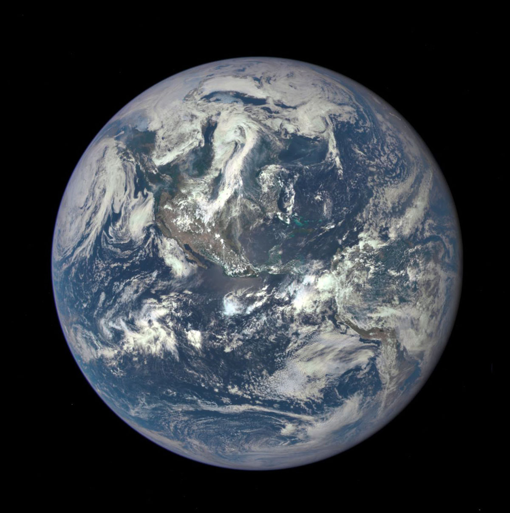
Figure 50.5.
In particular, if we take any point on a spheroid that lies not on the equator and is not one of the poles, then there is only one simple closed geodesic running through this point. (Simple means that the geodesic closes on itself without an intervening self-intersection.) If we further reduce the symmetry by considering a triaxial ellipsoid (a surface that may be obtained from a spheroid by stretching or compressing it in a direction perpendicular to its axis of rotation; see fig. 50.6b), then we will only find three simple closed geodesic—namely, the equators defined by the three axes of symmetry of the ellipsoid (see fig. 50.7).
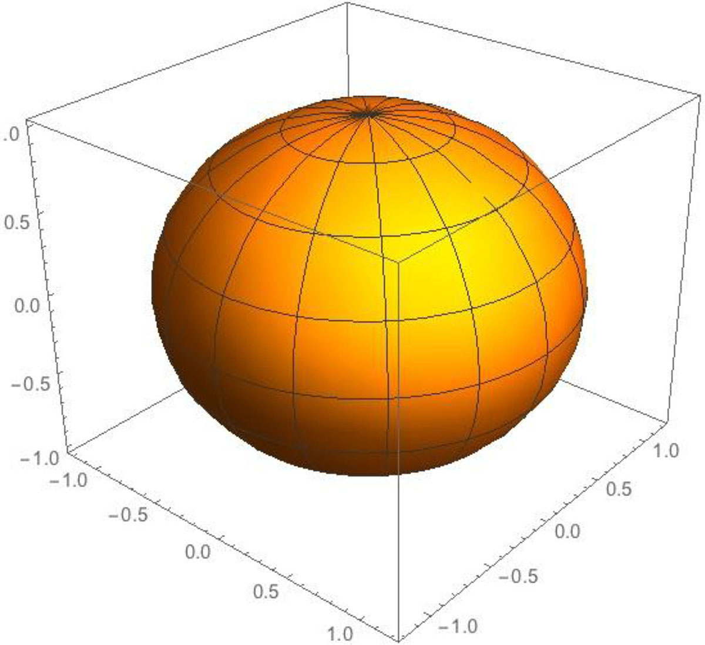
Figure 50.6a.
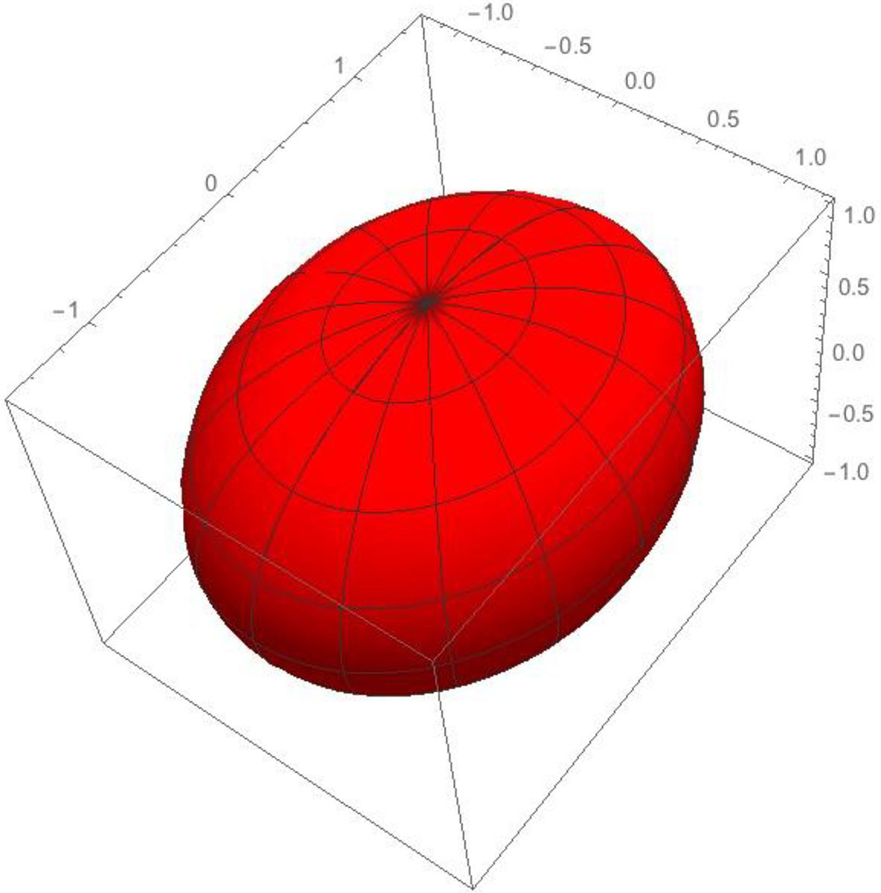
Figure 50.6b.
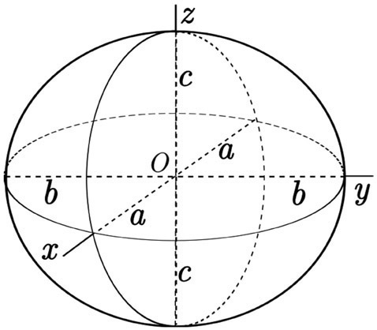
Figure 50.7. Image by Peter Mercator [CC BY-SA 3.0 (https://creativecommons.org/licenses/by-sa/3.0)]. https://commons.wikimedia.org/wiki/File:Ellipsoid_tri-axial_abc.svg
{kind=link}
As a matter of fact, three is the minimum number of simple closed geodesics any Riemann surface must have that is obtained by deforming a sphere. This result is known as the “theorem of three geodesics.” It was conjectured by the French mathematician Henri Poincaré in 1905, and finally proved by the German mathematician Hans Werner Ballmann in 1978. We mentioned earlier that Maryam Mirzakhani was especially interested in hyperbolic Riemann surfaces, which constitute the largest and most complex class of Riemann surfaces. It has been known for more than fifty years that on a hyperbolic surface, the number of closed geodesics, whose length is less than some bound L, grows exponentially with L; more precisely, it is asymptotic to
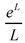
for large L. This result has a striking similarity to the “prime number theorem” for positive integers, estimating the number of primes less than a given size (the number of primes less than eL is asymptotic to for large L). Therefore, it is also known as the “prime number theorem for geodesics.” Mirzakhani was able to show that the number of simple closed geodesics of length at most L does not grow exponentially with L, but is asymptotic to c·L(6g−6), where c is some constant and g is the genus of the surface. Loosely speaking, the genus of a Riemann surface is the number of holes it has. A sphere has genus 0, a torus or donut has genus 1, and in figure 50.8 we also show a genus-2 surface and a genus-3 surface.
for large L). Therefore, it is also known as the “prime number theorem for geodesics.” Mirzakhani was able to show that the number of simple closed geodesics of length at most L does not grow exponentially with L, but is asymptotic to c·L(6g−6), where c is some constant and g is the genus of the surface. Loosely speaking, the genus of a Riemann surface is the number of holes it has. A sphere has genus 0, a torus or donut has genus 1, and in figure 50.8 we also show a genus-2 surface and a genus-3 surface.
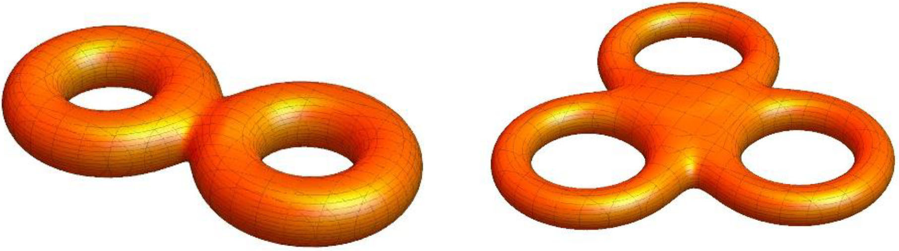
Figure 50.8.
To prove her result on the number of closed and simple geodesics on a hyperbolic surface, Mirzakhani used the concept of the moduli space of all Riemann surfaces with genus g. Two Riemann surfaces are said to be topologically equivalent if they can be deformed into each other by continuous deformations. For example, a coffee mug and a torus are both genus-1 surfaces and can be deformed into each other in a continuous fashion (see fig. 50.9)—that is, without any cutting.
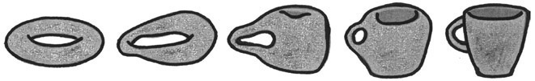
Figure 50.9.
This topological equivalence gave rise to a joke among mathematicians, describing a topologist as someone who cannot tell the difference between a coffee mug and a donut. A given topological surface can take on a huge variety of geometric shapes via continuous deformations. For a topological surface of genus g, these deformations depend on (6g) – (6) parameters or “moduli.” These moduli define by themselves a mathematical space of dimension (6g) – (6) with certain geometric properties, called the moduli space of Riemann surfaces of genus g. In her work, Mirzakhani established a link between calculations on abstract moduli space and the counting problem for simple closed geodesics on a single surface, allowing her to translate mathematical results from one world to the other. Not only could she answer questions regarding geodesics on hyperbolic surfaces by rephrasing them in moduli space, but the connection she had discovered also provided new insights into moduli space. In her highly original proofs, Mirzakhani brought together several mathematical disciplines and built bridges that made powerful mathematical tools of one discipline available to the other. This has led to significant advances in each of them and will also have a considerable influence on their future development.